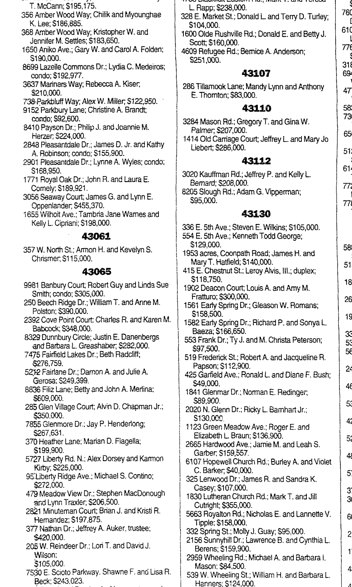

Justin Danenbergs b. 1975
Peter's first cousin.
Living. As for every living relative on this site, the birth date is given by year only, and no current address is shown.
Also recorded as Justin Erik Danenbergs.
Justin Danenbergs was born in 1975 in Ohio, United States2,3, the son of Kalvis Danenbergs and Melinda Lee Berger12,13.
Family
- Parents
- Kalvis Danenbergs b. 1946 and Melinda Lee Berger b. 1947 documented
- Partner
- Barbara L. b. 1968
Life events
| Event | Date | Place and details |
|---|---|---|
| Born | 1975 | Ohio, United States Preferred version: Automatic: the best-supported value (primary records count most; the 2015 tree least). Not yet reviewed; add a preference in data/curation/structure.yaml.2,3 |
| Lived | bet 1975 and 1994 | Midland, Clinton County, Ohio, United States6 |
| Born | 1976 | According to an online family tree and the family's 2015 tree4,5 |
| Education | bet 1994 and 1999 | Columbus, Ohio, United States Bachelor's degree in Pharmacy, The Ohio State University, 1994–1999. Activities: the Stadium Scholarship Dormitory (the merit-and-need scholarship hall built into the south stands of Ohio Stadium) and Rho Pi Phi ("Ro Pi Phi"), the pharmacy fraternity.9 |
| Work | bet Oct 1999 and 2026 | Columbus, Ohio, United States A pharmacist with Medco and then Express Scripts for twenty-seven years, in and around Columbus, Ohio. The posts, with his own descriptions and dates: Pharmacist, Express Scripts, from October 1999; MTM Quality Manager, MEDCO, Columbus, Ohio Area, January–September 2010 ("I reviewed Medicare…10 |
| Lived | 8 Sep 2001 | Powell, Ohio, United States7 |
| Lived | bet 9 Sep 2011 and 2026 | Columbus, Ohio, United States8 |
| Note | 29 Oct 2026 | Identifiers: LinkedIn https://www.linkedin.com/in/justin-danenbergs-797091166 (member urn 663077923, provider id ACoAACeFxCMBXq5Tv_U0krZ4qJvHmoD-pZL1nsY), verified, 70 followers, 68 connections, third-degree from Peter — they are NOT connected; profile photograph…11 |
Records

Sources
- Justin Erik Danenbergs, Age 51, Columbus, OH.
# Justin Erik Danenbergs — Lives in: Columbus, Ohio. DOB: 1975
Full name Justin Erik Danenbergs — the middle name was not in the tree. The Latvian form Ēriks runs in the family's naming.
- Justin Erik Danenbergs — Overview.
DOB: 1975
Born 1975. CORRECTION: the tree and MyHeritage both say 1976, from the 2015 database with no record cited. The Ohio voter file gives 1975, and the aggregator's own index line reads "Age: 51 (born 1975)". His LinkedIn is consistent — he started at Ohio State in 1994, which suits a 1975 birth better than a 1976 one.
- Ohio Birth Index entry for Justin Erik Danenbergs, 1975, Certificate 1975114837, Certificate Number 1975114837.
Name: Justin Erik Danenbergs | Birth Date: 1975 | Birth Place: Ohio, USA | Birth Registration Date: 1975 | Father: Kalvis Danenbergs | Mother: Melinda Lee Danenbergs | Certificate Number: 1975114837
Born 1975 in Ohio (registered 1975, Certificate Number 1975114837); father Kalvis Danenbergs, mother Melinda Lee Danenbergs
- Peter's tree, danenberg.sql, 2007–2015, personae 112, birth.
- MyHeritage family tree 'Dzimta' of Peter's third cousin (his family site), member GEDCOM export of 26 Oct 2026, I141 (person-6000141), GEDCOM lines 4134–4143.
BIRT · 1976
- Midland, Clinton County, Ohio household of Kalvis and Melinda Lee Danenbergs.
Kalvis Danenbergs (age 79) is currently listed at [address omitted], Midland, 45148 Ohio, is not affiliated to any political party. Kalvis is registered to vote since September 28, 1973 in Clinton County. Our records show Melinda Lee Danenbergs (79) as possible relative.
Born in 1975 and raised in Midland (Jefferson Township), Clinton County, Ohio by his parents Kalvis Danenbergs and Melinda Lee Berger (who have resided at [address omitted], Midland, OH 45148 and been registered to vote in Clinton County since 28 September 1973) until he left for college in Columbus in 1994.
- House Market (Delaware County), The Columbus Dispatch (Columbus, Ohio), 8 September 2001, p. 56 (D8).
[address omitted]; Justin E. Danenbergs and Barbara L. Greashabep $282,000.
Translation: [address omitted]; Justin E. Danenbergs and Barbara L. Greashaber; $282,000.
Purchased house at [address omitted] (Powell, Delaware County, Ohio), for $282,000 jointly with Barbara L. Greashaber; earlier played varsity tennis for Blanchester High School (Clinton County, Ohio, near Midland) in May 1994.
- Justin Erik Danenbergs — Voting Profile.
Justin Erik Danenbergs (age 51) is currently listed at [address omitted], Columbus, 43215 Ohio, is not affiliated to any political party. Justin is registered to vote since September 09, 2011 in Franklin County … Precinct Code: Cols 14-a
[address omitted], Columbus, Ohio 43215 — downtown Columbus, in the Arena District — where he and Barbara are both on the voter roll. Registered to vote in Franklin County since 9 September 2011, voter status Active, no party affiliation, precinct Cols 14-a. A people-aggregator snippet (whitepages, not archived) gives his addresses as "Columbus, OH • Midland, OH • Powell, OH", so Powell — a northern Columbus suburb — is a likely earlier address and Midland is his parents' house.
- Justin Danenbergs — The Ohio State University.
{"degree": "Bachelor's degree, Pharmacy", "school": "The Ohio State University", "start": "1/1/1994", "end": "1/1/1999", "activities": "Stadium Scholarship Dormitory, Ro Pi Phi Pharmacy Fraternity"}
Bachelor's degree in Pharmacy, The Ohio State University, 1994–1999. Activities: the Stadium Scholarship Dormitory (the merit-and-need scholarship hall built into the south stands of Ohio Stadium) and Rho Pi Phi ("Ro Pi Phi"), the pharmacy fraternity.
- Justin Danenbergs — Diabetes Specialist Pharmacist at Express Scripts.
"headline": "Diabetes Specialist Pharmacist at Express Scripts", "location": "Columbus, Ohio Metropolitan Area", "is_verified": true
A pharmacist with Medco and then Express Scripts for twenty-seven years, in and around Columbus, Ohio. The posts, with his own descriptions and dates: Pharmacist, Express Scripts, from October 1999; MTM Quality Manager, MEDCO, Columbus, Ohio Area, January–September 2010 ("I reviewed Medicare Counseling calls for the MTM program"); CRD Pharmacist, Express Scripts, September 2010 – October 2012 ("I worked in the Prior Authorization/Coverage Review Department for Medco/Express Scripts"); Pharmacist Quality and Process Improvement Manager, November 2012 – September 2018 ("I complete Coverage Review audits for pharmacists, nurses and medical directors"); Specialty Pharmacist, Accredo — an Express Scripts Company, Dublin, Ohio, full-time, September 2018 – February 2020 ("I work with Specialty medications, focusing on assisting RA, HIV, and MS patients"); Diabetes Specialist Pharmacist, Express Scripts, full-time, from February 2020 ("I currently assist patients with Gaps In Care opportunities, specializing in diabetes and diabetes medications. Also, I review and present calls to clients, showcasing my department's talents"). His summary: "Experienced Pharmacist with a demonstrated history of working in the hospital & health care industry. Skilled in U.S. Health Insurance Portability and Accountability Act (HIPAA), Healthcare Management, Managed Care, Business Process Improvement, and Medicare." He is the second pharmacist in the house: his father Kalvis is an R.Ph.
- Justin Danenbergs — profile metadata.
"member_urn": "663077923", "is_verified": true, "network_distance": "THIRD_DEGREE"
Identifiers: LinkedIn https://www.linkedin.com/in/justin-danenbergs-797091166 (member urn 663077923, provider id ACoAACeFxCMBXq5Tv_U0krZ4qJvHmoD-pZL1nsY), verified, 70 followers, 68 connections, third-degree from Peter — they are NOT connected; profile photograph https://media.licdn.com/dms/image/v2/C4E03AQHIyOummgbUSg/profile-displayphoto-shrink_800_800/0/1530810210641 . A second, near-empty LinkedIn profile for the same man exists at https://www.linkedin.com/in/justin-danenbergs-7a8789163 ("Pharmacist at Express Scripts", Columbus). Ohio voter-file id OH0021501785. No Facebook, Instagram, X or ORCID profile was found.
- Peter's tree, danenberg.sql, 2007–2015, parentages 45.
- Ohio Birth Index entry for Justin Erik Danenbergs, 1975, Certificate 1975114837, Certificate Number 1975114837.
Name: Justin Erik Danenbergs | Birth Date: 1975 | Birth Place: Ohio, USA | Birth Registration Date: 28 Oct 1975 | Father: Kalvis Danenbergs | Mother: Melinda Lee Danenbergs | Certificate Number: 1975114837
father: Kalvis Danenbergs; mother: Melinda Lee Berger